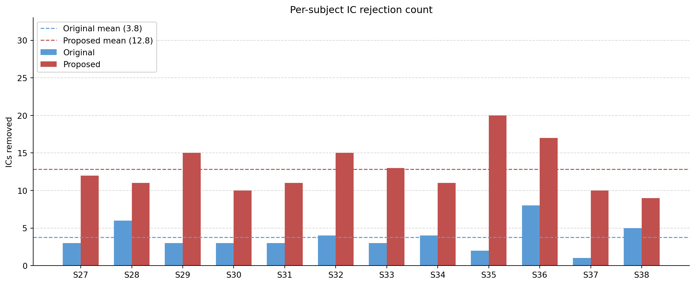
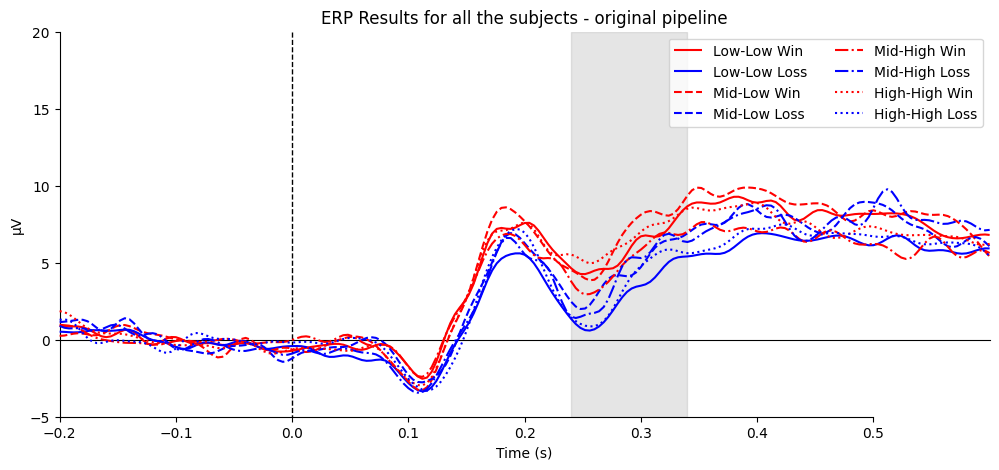
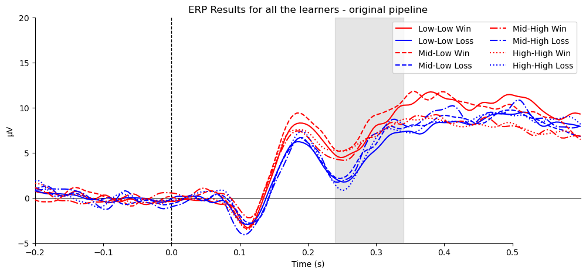
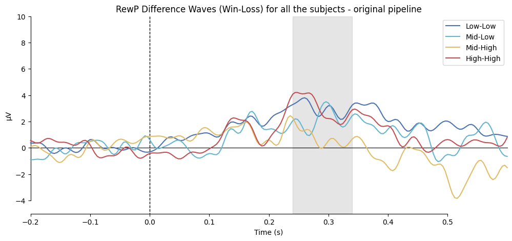
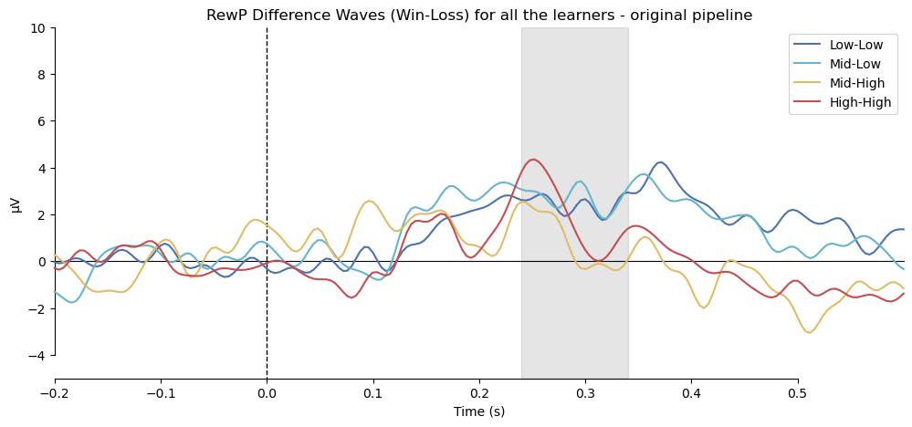
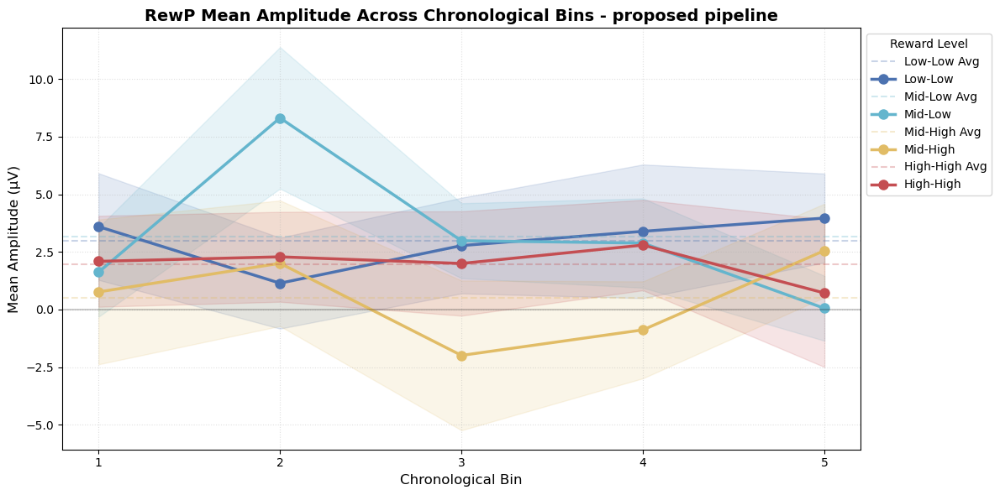
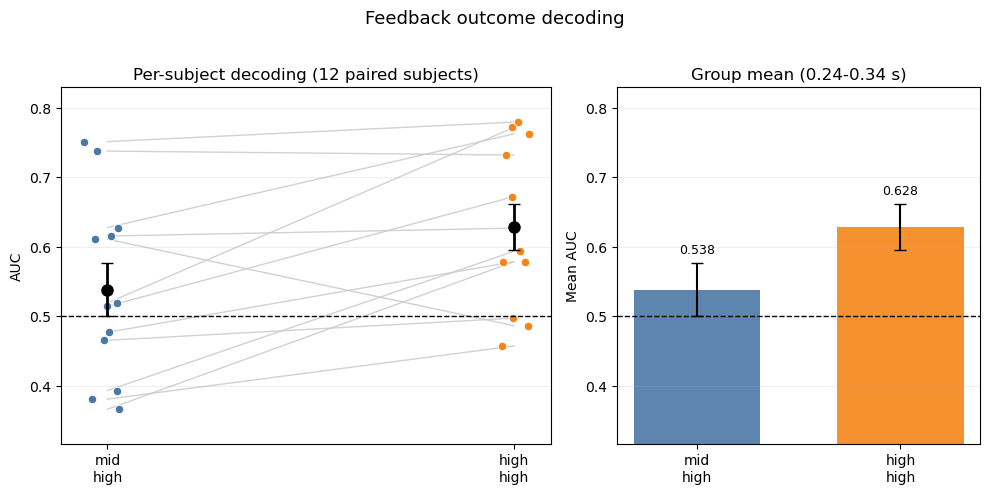
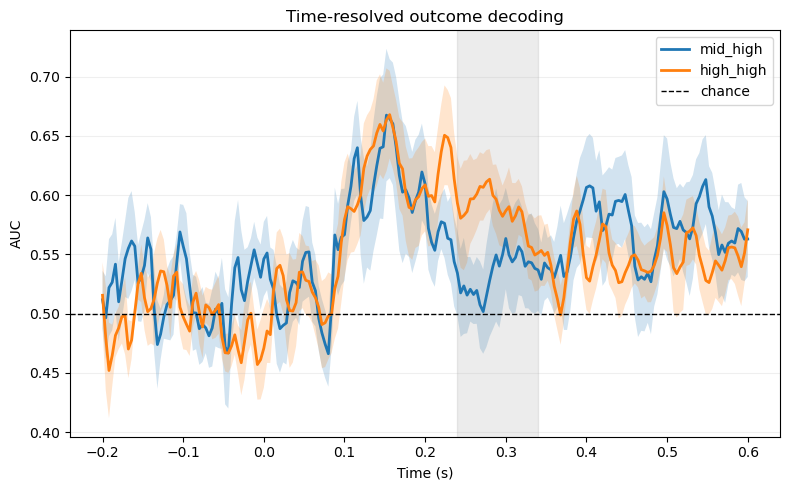
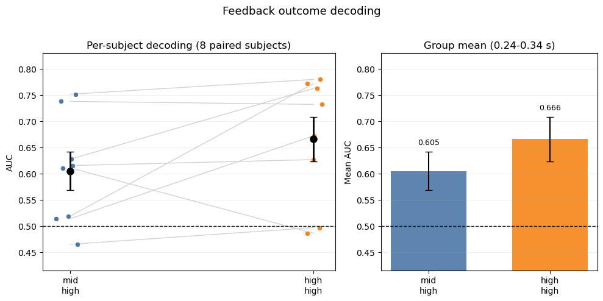
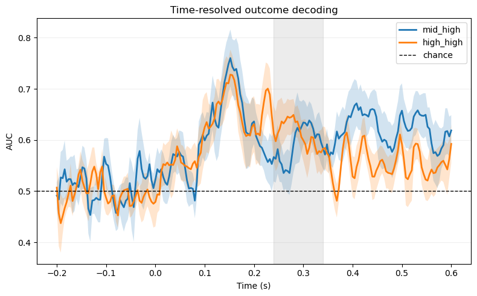

1 Introduction
Reward processing in the anterior cingulate cortex (ACC) has been extensively studied, yet its precise role in decision-making remains a matter of ongoing debate. As part of the course Signal Processing and Analysis of Human Brain Potentials (EEG), this project seeks to reproduce the ERP analysis from the study Task-level Value Affects Trial-level Reward Processing(2022). The study focuses on how task-level value modulates trial-level reward processing in EEG data. In this report, we outline our proposed analysis pipeline, present our findings, and further describe an extension involving decoding analysis. In addition, we provide access to the GitHub code repository, along with code documentation, configuration files, and environment setup instructions. Analysis scripts are available: https://github.com/xuyg16/EEG_Reward-Processing_ERP.git
1.1 Background
ACC, as part of the frontal cortex, comprises complex mechanisms and interacts closely with other cortical structures. Its precise cognitive role remains under ongoing debate (2000; 2023). Nevertheless, existing literature strongly suggests that the ACC is involved in action-outcome learning, particularly in relation to reward processing. These action-outcome learning properties can be understood within a reinforcement learning (RL) framework (2020), in which learning is driven by feedback that is better or worse than expected. Within this account, reward prediction error (RPE) magnitude has been linked to the reward positivity (RewP), an event-related potential (ERP) component thought to reflect reward-related ACC activity (2026; 2018).
In the context of win/loss decision-making, different RL frameworks assign different roles to the ACC, ranging from standard trial-based RL accounts to model-based and hierarchical RL accounts. An important question is how the global environment and the current task influence RPEs, and how the RewP changes in the context of a task or a series of tasks.
1.2 Overview of the Replication Study
The study by Hassall et al (2022)investigated a fundamental question: Whether and how reward-related ACC activity, as indexed by RewP, varies with task value. While traditional reinforcement learning models focus on trial-by-trial outcomes, the authors hypothesized that average task value would significantly modulate the neural response to individual feedback.
To isolate the effect of task value from trial-level expectancy, the authors designed a “Casino” task where participants gambled in three distinct environments: * Low-Value Task: Contained only low-value “slot machines” (50% win probability and no preferred right arm). * Mid-Value Task: Contained a mixture of high-value (80% win probability if choosing the right arm) and low-value machines. * High-Value Task: Contained only high-value slot machines. Crucially, the reward magnitude remained identical across all tasks. By including the same high-value cue in both the Mid-Value and High-Value tasks, the researchers could compare the neural response to the exact same objective outcome in different global contexts.
The primary neural metric was RewP, an ERP component typically recorded at electrode FCz between 240 and 340 ms following feedback. The RewP is widely considered a “readout” of the midbrain dopamine system’s response to outcomes, indicating whether events are better or worse than expected.
The authors found that the RewP was significantly reduced when the average task value was high. Specifically, the RewP following high-value cues was smaller in the High-Value task than in the Mid-Value task, despite the reward expectancy being the same in both. The authors proposed that high average reward rates increase tonic dopamine, which suppresses the phasic dopamine response (the RewP) to individual wins.
This study provided critical evidence that the human brain does not process rewards in a vacuum but the ACC tracks the task value to determine how much weight to give to individual successes and failures.
Building on the author’s ERP pipelines, we propose our own pipelines to assess whether we can replicate the paper’s results. Noted that we can not get access to all the data. Given the situation that we just have only the data from half of the participants, our results came out differently. Furthermore, by implementing both single-window and time-resolved decoding analyses, we aimed to provide an extended, albeit limited, perspective on reward processing.
2 Pipeline
Even given the same EEG data, different pipelines could lead to very different results depending on the toolkit used, preprocessing steps, and type of analyses performed. For instance, if one pipeline deployed strict preprocessing steps to remove as much noise as possible while the other retained the original signal, they might yield very different ERPs and conclusions. Even though there are some generally agreed-upon steps in EEG signal processing, there is still considerable flexibility, with many caveats as each decision carrying its own advantages and disadvantages. One principle holds across this variability: results are more reliable and valid when they replicate across independent pipelines.
Toolkit difference: One key difference between the original pipeline, referred to as Original, and our proposed pipeline, referred to as Proposed, lies in the toolkit used: the former is implemented in EEGLAB for MATLAB, while the latter uses MNE-Python. To isolate the effect of this toolkit change from genuine methodological differences, we also replicated the original pipeline in MNE-Python, referred to as Original-MNE. Any discrepancy between Original and Original-MNE results can therefore be attributed to toolkit differences rather than processing decisions, while discrepancies between Original-MNE and Proposed reflect deliberate methodological changes. For completeness, we also ran the original EEGLAB script restricted to Oxford-site participants, which is not described here separately, as its steps are identical to those of Original.
Learners vs. non-learners: The Original pipeline included only ‘learners’ in the final ERP analysis — those who paid attention and learned, defined as participants who achieved a win rate > 60% on high-value cues. We operated the pipelines on all subjects as well as the leaners only.
Access to participant data: The original study includes participants from two different sites, with 24 from the University of Victoria (UVic) and 12 from the University of Oxford (Oxford). Since we worked exclusively with data from the Oxford site, steps that map electrode locations across different recording caps to common locations were omitted.
2.1 Pipeline Overview
| Step :============================== 00: Reference channel | Original :=========================================================================================== Fz reinserted | Proposed :================================================== — | Original-MNE :======================================= — | |
| 00: Montage | site1/2.locs → common.locs | site2.locs | site2.locs | |
| 00: Re-referencing | Linked mastoids (T9, T10) | — | — | |
| 01: Downsampling | 1000 Hz → 250 Hz | — | — | |
| 01: Band-pass filter | 0.1–30 Hz | — | — | |
| 01: Line noise removal | Notch at 50/60 Hz | Notch at 50 Hz | Notch at 50 Hz | |
| 02/08: Channel rejection | Automatic, iterative (>20% epoch loss) | — | — | ||||
| 03/07: Trial rejection | For ICA: Peak-to-peak (500 µV); absolute (500 µV); gradient (40 µV); minimum (0.1 µV) For main EEG: peak-to-peak (150 µV); absolute (150 µV); gradient (40 µV); minimum (0.1 µV) |
For ICA: Absolute (500 µV); minimum (0.1 µV) For main EEG: Absolute (150 µV); minimum (0.1 µV) |
— | |
| 04: ICA algorithm | Runica | Picard | Infomax (extended) | |
| 04: IC rejection | ICLabel; P(eye) > P(brain) | ICLabel on 1–100 Hz copy; P(brain) < 40% | — | |
| 05: Interpolation | Spherical spline | — | — | |
| 06: Early trial removal | First 10 trials per task | — | — | |
| 09: Trial-level averaging | Mean | 5% trimmed mean | — | |
| 10: ERP quantification | Peak amplitude (240–340 ms, FCz) | Peak, mean, and peak-to-peak amplitude | Peak, mean, and peak-to-peak amplitude | |
| 11: Statistics | Paired t-test (RewP); one-way ANOVA + t-test (behavioral) | + permutation t-test (RewP) | + permutation t-test (RewP) | |
| 12: Further Analysis | Decoding; Cross-time analysis | |||
Tip
Notes:
- “—” in the Proposed and Original-MNE columns indicates the step follows Original unless otherwise specified. Differences between Original and Original-MNE reflect toolkit constraints; differences between Original-MNE and Proposed reflect deliberate methodological choices.
- Infomax in MNE is equivalent to Runica in EEGLAB (EEGLAB Contributors n.d.b). The extended variant was used as recommended by an MNE warning, though it is unclear whether this matches the version used in Original.
- ICLabel is implemented slightly differently between EEGLAB and MNE: ‘eye blinks’ and ‘eye movements’ are listed as separate categories in MNE but aggregated as ‘eye’ in EEGLAB.
2.2 Steps 00–06: Preprocessing
2.2.1 Step 00: Adding Reference Channel, Setting Montage, and Re-referencing
Refer to: s00_add_reference.py
Purpose Raw EEG data is recorded relative to one or more reference electrode(s). Before any preprocessing, the electrode layout (montage) must be established so that MNE can interpret the spatial relationships between channels, which is required for later steps such as ICA, interpolation, and topographic visualization. Because the reference channel is recorded as all zeros and may not be stored in the raw data file, it must be reinserted manually before re-referencing can be applied. Re-referencing is standard practice in EEG signal processing, as the online reference may not be optimal for subsequent analysis.
Original Pipeline For the Oxford site, the channel ‘Fz’ is reinserted as the reference channel, yielding 32 channels in total. Original used the montage stored in site1channellocations.locs for the UVic site and site2channellocations.locs for the Oxford site. Because different recording caps were used at the two sites, signals were subsequently remapped to common.locs with channels added or removed accordingly. Original used linked mastoids (channels T9 and T10) for re-referencing, as mastoid positions are assumed to pick up little neural signal. If either T9 or T10 was rejected during channel dropping, only the remaining electrode was used as the reference.
Proposed Pipeline We followed the same reference channel and montage scheme as Original. Since we work exclusively with Oxford-site data, the cross-site remapping step is not required and has been omitted. The choice of mastoid referencing is not well motivated here and will be discussed further in the limitations section.
Caution
Re-referencing occurs after bad-channel dropping in Original, and consequently in Proposed as well. As we think this ordering is arbitrary for linked-mastoid referencing, it is described here for organizational clarity.
2.2.2 Step 01: Downsampling and Filtering
Refer to: s01_downsample_filter.py
Purpose Raw EEG is sampled at a high frequency during recording, 1000 Hz in our case, which exceeds what is needed to resolve the neural signals of interest. Downsampling reduces memory and computation demands for all subsequent steps, while band-pass filtering confines the signal to the frequency range of interest and removes low- and high-frequency noise that would otherwise obscure the component.
Original Pipeline Original downsampled from 1000 Hz to 250 Hz, then applied a 0.1–30 Hz band-pass filter, followed by a notch filter at 50 Hz (Oxford site) or 60 Hz (UVic site) to suppress electrical line noise.
Proposed Pipeline We adopted the same parameters. A target rate of 250 Hz is well-suited to the analysis: it meaningfully reduces data size and satisfies the Nyquist criterion for the 30 Hz bandpass upper bound. MNE’s .resample() applies an anti-aliasing low-pass filter at 125 Hz automatically prior to downsampling, which serves the same purpose as the equivalent EEGLAB step and ensures no aliasing artifacts are introduced.
A lower bound of 0.1 Hz is a well-established threshold suitable for attenuating slow drifts while preserving statistical power and minimising filter-induced artifacts (Tanner, Morgan-Short, and Luck 2015). We retained 30 Hz as the upper bandpass bound rather than the more commonly used 40 Hz, following the original authors, as we thought RewP should fall well below this threshold.
Since we have access only to Oxford-site data, the notch filter is uniformly set to 50 Hz.
Ordering of downsampling and band-pass filtering: We downsampled before applying the band-pass filter, matching Original. Applying multiple sequential filters in principle risks introducing more ringing artifacts. In practice, however, the 125 Hz anti-aliasing filter applied at downsampling is sufficiently far from the 30 Hz bandpass boundary that any interaction is negligible, so the ordering does not produce a meaningful difference here.
Line noise filter choice: We evaluated both a notch filter and a ZapLine filter and retained the notch filter. ZapLine was slower and left visible residual artifacts in some cases (Figure 5). The necessity of any line-noise removal step after a 30 Hz bandpass is not self-evident, as 50 Hz lies well above the passband. However, we observed residual 50 Hz contamination in the power spectrum of several subjects after bandpass filtering alone (Figure 3), consistent with sub-harmonic leakage. The notch filter reliably resolved this, as shown in (Figure 4).
NoteSanity Check — Filtering


To reproduce the plots
With <single_subject_processing.ipynb> open:
Set:
SUBJECT: 32
INSPECTION_MODE: TRUE
Navigate to:
Section — Examine Results of Filtering2.2.3 Step 02/08: Channel Rejection
Refer to: s02_drop_bad_channels.py, s08_find_bad_channels.py
Purpose Channels with poor signal quality due to, e.g., electrode displacement, high impedance, or persistent noise, can contaminate neighbouring channels and degrade ICA decomposition, and are therefore unacceptable even if they are not the direct target of analysis. Identifying and removing them before further processing prevents these artifacts from propagating through the pipeline.
Original Pipeline Rather than applying a fixed threshold or relying on manual inspection, Original uses an iterative two-loop structure. Bad channels are not identified upfront. Instead, after the first pass of ICA component rejection, any channel responsible for more than 20% of epoch rejections is flagged as bad and removed in the second loop. This defers the channel rejection decision until after the data-driven artifact cleaning stage, allowing the criterion to be based on observed trial-loss impact rather than signal statistics alone. The loop logic is illustrated in Figure 6.
Proposed Pipeline We adopted the same loop structure and threshold. The iterative approach is preferable to manual inspection for reproducibility, and the 20% epoch-loss criterion provides a principled, data-driven basis for dropping channels rather than relying on subjective visual judgment.

2.2.4 Step 03: Epoch Rejection
Refer to: s03_07_trial_rejection.py
Purpose Even after channel-level rejection and ICA component removal, individual epochs may contain transient artifacts that would distort the averaged ERP if retained. Epoch rejection identifies and discards these trials before averaging.
Original Pipeline Trial rejection is applied at two points in the pipeline: once to the data used for ICA training (Step 03), and again after all preprocessing steps are complete (Step 07). In each pass, four criteria are applied to every epoch: a peak-to-peak amplitude threshold (500 µV for ICA; 150µV for ERP epochs), an absolute amplitude threshold (500 µV for ICA; 150µV for ERP epochs), a sample-to-sample gradient threshold (40 µV), and a minimum amplitude threshold (0.1 µV). An epoch failing any single criterion is rejected.
Proposed Pipeline MNE’s epoch rejection supports an absolute amplitude threshold and a minimum amplitude threshold, corresponding to the absolute and minimum criteria from Original. We applied these two criteria and omitted the peak-to-peak and gradient thresholds, accepting the trade-off between artifact sensitivity and implementation simplicity. Parameter values from Original are retained where criteria overlap. A practical benefit of MNE’s native rejection is that the full rejection log is accessible via .drop_log, making it straightforward to audit which trials were removed and why.
Caution
The epoch rejection applied to the main EEG signal is performed in Step 07, after epoching. It is described here for organizational clarity.
2.2.5 Step 04: ICA
Refer to: s04_ICA.py
Purpose Independent component analysis (ICA) decomposes the multichannel EEG signal into statistically independent sources. Components corresponding to non-neural artifacts, such as eye blinks and heartbeat, can then be identified and removed before further analysis, without discarding entire trials or channels.
Original Pipeline Original runs Runica on epoched data time-locked to cue onset, preventing ICA from being driven by large transient distortions. Components are labelled using ICLabel in EEGLAB, and any component more likely to be eye-related than brain-related (P(eye) > P(brain)) is removed from the continuous EEG signal.
Proposed Pipeline As in Original, we epoched eeg_ICA for ICA training and rejected epochs with excessive artifacts before decomposition, using the criteria described in Step 03. We used Picard rather than Runica . We applied ICLabel for component classification.
The key structural difference from Original is that rather than running ICA on the fully preprocessed signal, we created a separate copy of the data after downsampling (referred to as eeg_ICA) and applied a 1–100 Hz band-pass filter to this copy before ICA decomposition. A 1 Hz high-pass is recommended for ICA, as low-frequency drifts can distort the decomposition (MNE Contributors n.d.a). Additionally, as ICLabel’s classifier was trained on data filtered to this range , applying it to data filtered outside this range may reduce labelling accuracy. The ICA weights learned from eeg_ICA are then transferred to the main preprocessed signal.
Manual inspection revealed that artifacts including heartbeat remained after applying Original’s rejection criterion, so we adopted a stricter threshold: components are excluded if their estimated probability of reflecting brain activity falls below 40%. This resulted in a substantially larger number of rejected components in Proposed compared to Original-MNE, as shown in ?@fig-ica_comp.
2.2.6 Step 05: Interpolation
Refer to: s05_interpolation.py
Purpose If one or more channels have been marked as bad and removed, the electrode locations they occupied are left empty. Interpolation reconstructs the missing channel signals from surrounding electrodes, restoring a complete channel set for subsequent analyses that depend on spatial completeness.
Original Pipeline Original used the default spherical interpolation method (EEGLAB Contributors n.d.a).
Proposed Pipeline We used MNE’s default interpolation method, which is spherical spline (MNE Contributors n.d.b), consistent with Original. We note that this choice was not deliberate as we were not aware of alternatives.
NoteSanity Check — Cleaning Inspection for Subject 27 (trial rejection not shown)


2.2.7 Step 06: Early Trial Removal
Refer to: s06_early_trial_removal.py
Purpose At the start of each casino block, participants encountered a new set of slot machine cues for the first time. Early trials reflect initial familiarisation rather than stable cue–outcome learning, and including them would conflate learning-onset effects with the trained response patterns of interest.
Original Pipeline Original removes the first ten trials of each casino block to allow participants time to familiarise themselves with the new cue set.
Proposed Pipeline We retain the ten-trial cutoff. Given that each casino contains six distinct slot machines, the first ten trials provide only one to two exposures per cue, which is arguably insufficient to establish stable response tendencies before the removed trials end. A larger cutoff would be preferable from a signal quality standpoint, but given that we are working with less than half the original sample, further reducing trial counts risks leaving the analysis underpowered. We therefore follow the original authors’ decision as a deliberate compromise between data quality and quantity.
2.3 Steps 07 & 09: Making ERPs
Refer to: s07_epoching.py, s03_07_trial_rejection.py, s09_make_erps.py
Purpose ERPs are constructed by segmenting the continuous EEG into short epochs time-locked to events of interest, then averaging across trials within each condition. Averaging attenuates stochastic neural activity, leaving the stimulus-locked component that is consistent across trials.
Original Pipeline Original constructs 800 ms epochs (−200 to +600 ms relative to event onset) for feedback-locked analysis, with a 200 ms pre-stimulus baseline correction. Epochs are averaged within conditions to produce eight ERPs: Low-Low Win, Low-Low Loss, Mid-Low Win, Mid-Low Loss, Mid-High Win, Mid-High Loss, High-High Win, and High-High Loss. Win–loss difference waves are then computed within each of the four task × cue conditions, yielding the difference ERPs used for RewP quantification.
Proposed Pipeline We used the same epoch boundaries, baseline correction window, and difference-wave procedure. Rather than computing a simple mean across trials, however, we used a 5% trimmed mean, excluding the most extreme 5% of trials at each tail before averaging. With roughly half the original sample available, the arithmetic mean is more susceptible to distortion by individual outlier trials, while the trimmed mean may reduce this sensitivity and improve the robustness of the condition averages.
NoteSanity Check — Butterfly Plots


As shown in Figure 10 and Figure 11, all evokeds converge near zero in the baseline window (−200 to 0 ms) and diverge only after stimulus onset, confirming that baseline correction functioned correctly in both pipelines.
2.4 Step 10: RewP Calculation
Refer to: s10_rewp_calculation.py
Purpose The reward positivity (RewP) is a positive-going ERP thought to index a reward prediction error signal generated in anterior cingulate cortex and is the primary dependent variable of the present analysis.
Original Pipeline Original quantifies the RewP as the peak voltage within the 240–340 ms window at channel FCz, taken from the win–loss difference ERPs, following the recommendations of Sambrook and Goslin (2015).
Proposed Pipeline We compute the RewP using three methods — peak amplitude (as in Original), mean amplitude, and peak-to-peak amplitude, which captures the full deflection relative to the preceding negativity — to assess whether the choice of quantification approach affects the pattern of results. Following Original, we compute difference waves by subtracting the loss ERP from the win ERP within each condition, thereby minimising component overlap and allowing amplitude differences to be attributed to the RewP.
2.5 Step 11: Statistical Analysis
Refer to: behavior_task_value, stats.rewp_sccores.py, stats.inerence_parametric.py, stats.inference_permutation_test.py
Purpose Statistical analysis provides a systematic framework for interpreting the derived results, allowing us to assess the direction and magnitude of condition differences and to evaluate whether conclusions are reliable given the available sample size.
Original Pipeline Inferential statistics in the original study were conducted on the main learner sample. For the behavioural data, the mean proportion of winning trials across the low-, mid-, and high-value tasks was analysed using a one-way repeated-measures ANOVA, and effect sizes were reported as partial and generalized eta-squared. In addition, mean performance was compared between the mid- and high-value tasks using a paired-samples t-test, where performance was defined as the proportion of correct responses to high-value cues.
For the Rewp analysis, the original study used paired-samples t-tests on RewP scores. To avoid confounding task-value effects with differences in outcome frequency, only conditions with matched outcome frequencies were compared: (Low-Low vs Mid-Low), and (Mid-High vs High-High). Cohen’s d for paired-samples t-tests was also reported. For all t-tests, the authors assessed normality using the Shapiro–Wilk test on each variable separately rather than on paired difference scores, and no correction was applied when non-normality was observed because the t-test was considered sufficiently robust.
Proposed Pipeline
We retained the original inferential structure but adapted it to our reduced sample size. Specifically, we reproduced the behavioural ANOVA and paired t-test, as well as the two planned RewP comparisons. Because only 12 participants were available, including 8 learners, we additionally analysed the full sample as a sensitivity analysis. We also evaluated Shapiro–Wilk normality on paired difference scores rather than on each variable separately, as this is more directly aligned with the assumptions of the paired t-test. Finally, we supplemented the paired t-tests with exact paired permutation tests to provide a non-parametric robustness check.
3 Statistical Results
3.1 Behavioral results
Main analysis (learners only). In the learner-only sample (n = 8), the behavioral manipulation was preserved. The mean proportion of winning trials increased across task values, from 50.06% (95% CI [48.06, 52.06]) in the low-value task to 60.35% (95% CI [56.09, 64.60]) in the mid-value task and 64.72% (95% CI [59.02, 70.42]) in the high-value task, F(2,14) = 14.30, p < .001, ηp² = 0.67, ηg² = 0.62. This pattern is qualitatively consistent with the original study, in which win rates also increased with task value (Figure 12).

Mean performance, defined as the proportion of correct responses to high-value cues, was numerically higher in the mid-value block (80.81%, 95% CI [73.96, 87.67]) than in the high-value block (74.77%, 95% CI [64.16, 85.37]), but this difference was not statistically significant, t(7) = 1.22, p = .263, Cohen’s d = 0.43. This is in line with the original study, which likewise reported no reliable difference between these two task contexts(Figure 13).

As a sensitivity analysis, we repeated the same behavioral tests in the full available sample (n = 12). The overall pattern was similar: win rates still differed across task values, F(2,22) = 14.08, p < .001, ηp² = 0.56, ηg² = 0.42(Figure 14), and mean performance remained numerically higher in the mid-value block (72.76%, 95% CI [63.64, 81.87]) than in the high-value block (66.92%, 95% CI [56.92, 76.93])(?@fig-performance_all), although this comparison again did not reach significance, t(11) = 1.55, p = .149, Cohen’s d = 0.45.


3.2 RewP results
For the learner-only sample, the planned RewP comparisons did not reveal reliable task-level differences. For high-value cues, the RewP was 0.94 μV (95% CI [-3.44, 5.32]) in the mid-value task and 1.94 μV (95% CI [-2.38, 6.26]) in the high-value task, with no evidence of a significant difference, t(7) = -0.87, p = .411, Cohen’s d = -0.31. The exact paired permutation test supported the same conclusion (p = .359). For low-value cues, the RewP was 2.85 μV (95% CI [-0.78, 6.49]) in the mid-value task and 2.76 μV (95% CI [-2.33, 7.86]) in the low-value task, again with no reliable difference, t(7) = 0.04, p = .967, Cohen’s d = 0.02; the paired permutation result was likewise non-significant (p = .992).
The full-sample sensitivity analysis (n = 12) showed the same overall pattern. For high-value cues, the RewP was 0.89 μV (95% CI [-1.79, 3.57]) in the mid-value task and 2.57 μV (95% CI [-0.21, 5.34]) in the high-value task, yielding a non-significant comparison, t(11) = -2.04, p = .066, Cohen’s d = -0.59; the paired permutation test gave a nearly identical result (p = .064). For low-value cues, the RewP was 2.39 μV (95% CI [-0.10, 4.89]) in the mid-value task and 2.82 μV (95% CI [-0.31, 5.95]) in the low-value task, with no evidence of a difference, t(11) = -0.30, p = .771, Cohen’s d = -0.09; the paired permutation result was again non-significant (p = .806).
Overall, these findings only partially match the original study. Similar to the original report, the low-value cue comparison did not show a reliable RewP difference. However, the critical high-value cue comparison was not replicated: whereas the original study found a larger RewP in the mid-value than in the high-value task, our data did not show a significant difference, and the numerical trend was in the opposite direction.
3.3 Relationship between RewP and performance
Across all available participants (n = 12), the difference in RewP between the mid-value and high-value tasks was positively correlated with behavioral performance (r = 0.46, p = .135). Thus, the direction of the association matched the original study, but the effect was not statistically significant in the reduced sample. The original study reported a significant positive association across participants(?@fig-rewp_learner).

4 Discussion
A critical divergence exists between our findings and the original study regarding the High-Task, High-Cue condition. While the theoretical background suggests that the RewP should reflect a combination of reward and expectancy, our results and the authors’ results emphasize different aspects of this neural signal.
According to the Reward Prediction Error (RPE) theory, the RewP is not merely a measure of “how much” was won, but rather “how much better” the outcome was than expected. In the authors’ study, the High-High condition elicited a lower amplitude than the Mid-High condition. This is theoretically consistent with RL models: in a high-value task, the participant develops a high baseline expectation. When the reward occurs, it matches that expectation, resulting in a smaller prediction error and, consequently, a reduced RewP. The authors’ results are more “reasonable” under the strict definition of the RewP as a violation of predictions. In contrast, our data showed a more linear relationship where higher task values led to higher RewP amplitudes.
To investigate the discrepancy between our findings and the original study’s, we performed a verification process to ensure the integrity of our results: we replicated their pipeline in python (Figure 16), and also executed their original script in Matlab (Figure 17) to compare with our results.




The verification methods yielded results consistent with our proposed Python pipeline, and similar to the plot of our “only learners” scenario, showing that high-high condition gave higher values than mid-high condition. It confirms that our analytical approach is reliable and suggests that the difference is a result of sample size. Because our sample size was smaller, the subtle interaction of expectancy may not be caught and covered by the main effect of reward. Our results found out the Reward component of the RewP, showing that win elicits stronger signals than loss, whereas the authors’ data captured subtle prediction error component.
5 Crosstime Analysis
5.1 Introduction
The original paper reported that RewP amplitude is reduced in the high-value task relative to the mid-value task for high-value cues, interpreted as evidence that ACC evaluates trial-level outcomes relative to average task value. If this modulation reflects a learned representation of task value that strengthens with experience, RewP amplitude should change across the session as participants accumulate evidence about the reward environment. Specifically, we ask whether the RewP decreases over time in the High-High condition, where the discrepancy between trial reward and average task value diminishes as the task value estimate stabilizes, while remaining relatively stable in lower-value conditions. This constitutes an exploratory secondary analysis not conducted in the original paper.
5.2 Methods
Trials were divided into five chronological bins of approximately equal size, separately for each task group (low-value, mid-value, high-value). Binning was performed by trial count rather than time, since the duration of individual trials varies across participants and conditions. Corresponding bins across task groups were then concatenated, such that bin 1 contains the earliest trials from all three tasks and bin 5 contains the latest. RewP amplitude was extracted per participant per bin per condition using the same procedure as the main analysis.
Statistics Two complementary analyses were conducted. First, pairwise t-tests compared bin 1 against bin 5 for each condition separately, testing whether RewP amplitude at the start of the session differed from the end. Bonferroni correction was applied across the four comparisons to control the familywise error rate. Second, a two-way repeated-measures ANOVA with factors Condition (Low-Low, Mid-Low, Mid-High, High-High) and Bin (1–5) was fitted to test for main effects and the Condition × Bin interaction. Greenhouse-Geisser correction was applied to all effects given the likelihood of sphericity violations with five bin levels. One participant was excluded from the ANOVA due to a missing Mid-High observation in one bin. The t-tests used all available participants with NaN pairs removed.
5.3 Results
5.3.1 Bin counts summary

| Low-Low Win | Low-Low Loss | Mid-Low Win | Mid-Low Loss | Mid-High Win | Mid-High Loss | High-High Win | High-High Loss |
|---|---|---|---|---|---|---|---|
| mean | mean | mean | mean | mean | mean | mean | mean |
| 11.9 | 13.8 | 5.9 | 6.5 | 9.2 | 3.9 | 14.6 | 11.1 |
| 13.9 | 12.4 | 6.9 | 5.2 | 8.9 | 4.9 | 17.0 | 9.2 |
| 14.0 | 12.2 | 7.9 | 6.0 | 9.1 | 2.9 | 16.6 | 9.5 |
| 12.9 | 13.4 | 5.6 | 8.1 | 8.2 | 3.9 | 18.2 | 8.0 |
| 12.8 | 13.8 | 6.6 | 6.6 | 10.0 | 2.9 | 18.8 | 7.9 |
: Trial counts per chronological bin and condition {#tbl-bin-counts}
5.3.2 Pairwise t-tests (Bin 1 vs Bin 5)
| t | p | d | p_corrected | |
|---|---|---|---|---|
| Low-Low | -0.22 | 0.83 | -0.066 | 1 |
| Mid-Low | 0.608 | 0.555 | 0.183 | 1 |
| Mid-High | -0.358 | 0.728 | -0.113 | 1 |
| High-High | 0.597 | 0.563 | 0.18 | 1 |
: Paired t-test results comparing first and last bin per condition, with Bonferroni correction {#tbl-ttest}
5.3.3 Repeated-Measures ANOVA
| Source | F | ddof1 | ddof2 | p-unc | p-GG-corr | np2 | eps |
|---|---|---|---|---|---|---|---|
| condition | 1.149 | 3 | 21 | 0.353 | 0.327 | 0.141 | 0.398 |
| bin | 0.983 | 4 | 28 | 0.433 | 0.383 | 0.123 | 0.386 |
| condition * bin | 0.802 | 12 | 84 | 0.647 | 0.464 | 0.103 | 0.159 |
: Repeated-measures ANOVA with Greenhouse-Geisser correction {#tbl-anova}
5.4 Discussion
No significant effects were observed in either analysis. The pairwise t-tests found no evidence that RewP amplitude in bin 1 differed from bin 5 in any condition (p > 0.56, |d| < 0.23). The repeated-measure ANOVA yielded no significant main effect of Condition (F = 1.59, p = 0.25), Bin (F=0.74, p = 0.54), or Condition x Bin interaction (F = 1.33, p = 0.30).
The results do not support the hypothesis that RewP amplitude in the High-High condition decreases over while remains stable in other conditions. In contrast, RewP appears to be relatively stable across the chronological bins. Same analysis is done on the original pipeline, yet no statistically significant results were found either so was omitted here.
Admittedly, the current analysis is exploratory and is prone to many limitations. First of all, given that original data size was far from sufficiant, binning further divides it into smaller chunks and thus could hardly yield any significant result. Second, a warning is raised when calculating RM-ANOVA with Greenhouse-Geisser correction: Epsilon values might be innaccurate in two-way repeated measures design where each factor has more than 2 levels.. Therefore, the Greenhouse-Geisser corrected p-value for the Condition-Bin interaction should be treated with caution (need to check).
Future work would benefit from a larger sample size. Single-trial regression is a potential alternative that avoids averaging within bins and may offer greater statistical power.
6 Decoding
As an exploratory extension to the ERP analysis, we examined whether feedback outcome (win vs. loss) could be decoded from feedback-locked EEG in the mid-high and high-high contexts. Decoding used epochs derived from the same preprocessing pipeline as the main ERP analysis. To ensure that each feedback epoch was matched to the correct behavioural label, early familiarization trials were not removed immediately. Instead, feedback epochs were first aligned with the behavioural table, and only then were early familiarization trials excluded. This procedure preserved trial-by-trial correspondence between epochs and behavioural context/outcome labels.
For the single-window analysis, decoding was performed on multichannel EEG data within the 240–340 ms interval, corresponding to the canonical RewP time window. Classification was implemented with logistic regression and cross-validation, and performance was quantified using ROC AUC, where chance level is 0.50. A complementary time-resolved analysis was also conducted to characterize when outcome information became decodable across the feedback epoch. Decoding is included here as an additional analysis alongside the main replication of the ERP results.
6.1 Decoding Results
6.1.1 All subjects results
In the full sample (n=12), mean AUC within the 240–340 ms window was 0.538 for the mid-high context and 0.628 for the high-high context (Figure 19), indicating above-chance decoding in both conditions and descriptively stronger decoding in the high-high context.

The time-resolved analysis showed that decoding rose above chance shortly after feedback onset and reached its strongest values around 0.13–0.18s (Figure 20), with the high-high context remaining descriptively higher across the predefined window.

6.1.2 Learner-only results
A learner-only sensitivity analysis (n=8), howed a similar pattern. Mean AUC reached 0.605 in the mid-high context and 0.666 in the high-high context(Figure 21), again indicating above-chance decoding in both conditions and descriptively stronger decoding in the high-high context. The time-resolved learner-only analysis showed a broadly similar temporal profile to that observed in the full sample(Figure 22).


Overall, these decoding results suggest that feedback outcome information was present in EEG activity during, and slightly before, the RewP interval. Because the analyses were exploratory and based on a limited sample, they are interpreted as complementary to the main ERP findings.
7 Limitation
The current project’s ability to draw meaningful conclusions is substantially limited by the small number of participants available from the Oxford site alone (N = 12 before exclusions). Beyond sample size, there are further issues in our pipeline design and analysis choices that we would like to address.
7.1 Proposed Pipeline
Use of 30 Hz Upper Bound We followed the original pipeline in using 30 Hz as the upper bound of the bandpass filter. However, a higher cutoff, such as 40 Hz, may better preserve relevant brain signals and is more widely adopted as a standard threshold in ERP research.
Use of Mastoid Re-reference We followed the original pipeline’s choice of re-referencing to the average of the mastoid signals. However, as documented in the EEGLAB re-referencing guide [https://eeglab.org/tutorials/ConceptsGuide/rereferencing_background.html], there are potentially preferable alternatives, such as average reference. It is worth noting that the authors’ choice may have been partly influenced by the challenges of harmonising data across two recording sites using different hardware, which could have constrained their referencing options (not sure).
IC Component Rejection We applied a strict IC component rejection criterion, removing all components for which the probability of being brain-related fell below 40%. While this is effective at artifact removal, it resulted in a large number of rejected components (more than 10 for most participants) and may have discarded components carrying genuine neural signal.
EEG Copy for ICA
The copy of the EEG used for ICA training was filtered between 1–100 Hz but did not have the 50 Hz line noise removed. We later recognised this as a potential issue, as the line noise may occupy IC components unnecessarily, even though it was largely filtered out from the main signal used for analysis.
7.2 Original-MNE Pipeline
The Original-MNE pipeline was intended as an auxiliary comparison to isolate discrepancies arising from toolkit differences, but several additional differences were inadvertently introduced as confounding factors.
First, we omitted the channel-location remapping applied in the original pipeline for the Oxford site, along with the associated channel additions and deletions; this simplified implementation but may have introduced unmonitored differences in the channel layout. Second, MNE’s default filter settings use slightly different transition bands compared to EEGLAB, potentially resulting in different post-filtering signals. Third, we cannot confirm that EEGLAB’s RunICA algorithm is exactly equivalent to MNE’s Infomax ICA with extended=True. If they differ, this constitutes another uncontrolled source of discrepancy. Additionally, we cannot fully verify that the ‘eye’ label in EEGLAB’s ICLabel maps exactly onto the ‘eye movement’ and ‘eye blink’ categories in MNE-ICALabel. If there is a mismatch, the set of rejected components may differ between pipelines in ways that are difficult to quantify.
These issues are concretely reflected in bad channel identification. The original pipeline marked T10 as a bad channel for subject 32, implying T10 contributed to at least 20% of trial rejections. In Original-MNE, fewer than 1% of trial rejections were attributed to T10, and it was therefore not flagged as bad. This discrepancy illustrates how upstream differences can propagate into qualitatively different preprocessing outcomes.
We also acknowledge that our interpretation of the original EEGLAB script may have deviated from the authors’ intentions in ways we could not always verify, and that some implementation decisions in the MNE reimplementation rested on assumptions we were unable to fully validate.
7.3 Future Directions
Ideally, future work would isolate the effect of each individual pipeline step on the final results, enabling a more principled comparison. More detailed inspection of intermediate outputs, such as trial rejection rates at each stage across pipelines, would also help identify where and why results begin to diverge.
8 Acknowledgment
Generative AI tools (ChatGPT, Gemini, Claude) were used to support interpretation of the original EEGLAB pipeline, generate code for routine and repetitive data processing tasks, and review and correct analysis scripts and written reports. The content generated was reviewed by the authors.
References
Bush, George, Phan Luu, Michael I. Posner, George Bush, Phan Luu, Michael I. Posner, George Bush, Phan Luu, and Michael I. Posner. 2000. “Cognitive and Emotional Influences in Anterior Cingulate Cortex.” Trends in Cognitive Sciences 4 (6): 215–22. https://doi.org/10.1016/S1364-6613(00)01483-2.
Cavanagh, James F., and Clay B. Holroyd. 2026. “The Reward Positivity Signals a Goal Prediction Error.” Trends in Cognitive Sciences 0 (0). https://doi.org/10.1016/j.tics.2025.11.005.
Cockburn, Jeffrey, and Clay B. Holroyd. 2018. “Feedback Information and the Reward Positivity.” International Journal of Psychophysiology, Reward and Feedback Processing: State of the Field, Best Practices and Future Directions, 132 (October): 243–51. https://doi.org/10.1016/j.ijpsycho.2017.11.017.
EEGLAB Contributors. n.d.a. “Eeg_interp.m — EEGLAB Source.” Accessed March 31, 2026. https://github.com/sccn/eeglab/blob/develop/functions/popfunc/eeg_interp.m.
———. n.d.b. “Run ICA — EEGLAB Tutorial.” Accessed March 31, 2026. https://eeglab.org/tutorials/06_RejectArtifacts/RunICA.html#run-ica.
Hassall, Cameron D., Laurence T. Hunt, and Clay B. Holroyd. 2022. “Task-Level Value Affects Trial-Level Reward Processing.” NeuroImage 260 (October): 119456. https://doi.org/10.1016/j.neuroimage.2022.119456.
Holroyd, Clay B., and Tom Verguts. 2020. “The Best Laid Plans: Computational Principles of ACC.” PsyArXiv. https://doi.org/10.31234/osf.io/3df8y.
MNE Contributors. n.d.a. “ICA — MNE 1.0 Documentation.” Accessed March 31, 2026. https://mne.tools/stable/generated/mne.preprocessing.ICA.html.
———. n.d.b. “Interpolate Bad Channels — MNE Documentation.” Accessed March 31, 2026. https://mne.tools/stable/auto_examples/preprocessing/interpolate_bad_channels.html.
Rolls, Edmund T. 2023. “Emotion, Motivation, Decision-Making, the Orbitofrontal Cortex, Anterior Cingulate Cortex, and the Amygdala.” Brain Structure and Function 228 (5): 1201–57. https://doi.org/10.1007/s00429-023-02644-9.
Sambrook, Thomas D., and Jeremy Goslin. 2015. “A Neural Reward Prediction Error Revealed by a Meta-Analysis of ERPs Using Great Grand Averages.” Psychological Bulletin 141 (1): 213–35. https://doi.org/10.1037/bul0000006.
Tanner, Darren, Kara Morgan-Short, and Steven J. Luck. 2015. “How Inappropriate High-Pass Filters Can Produce Artifactual Effects and Incorrect Conclusions in ERP Studies of Language and Cognition.” Psychophysiology 52 (8): 997–1009. https://doi.org/10.1111/psyp.12437.